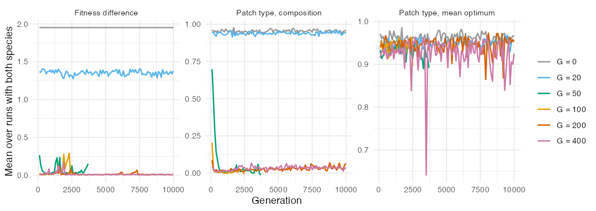
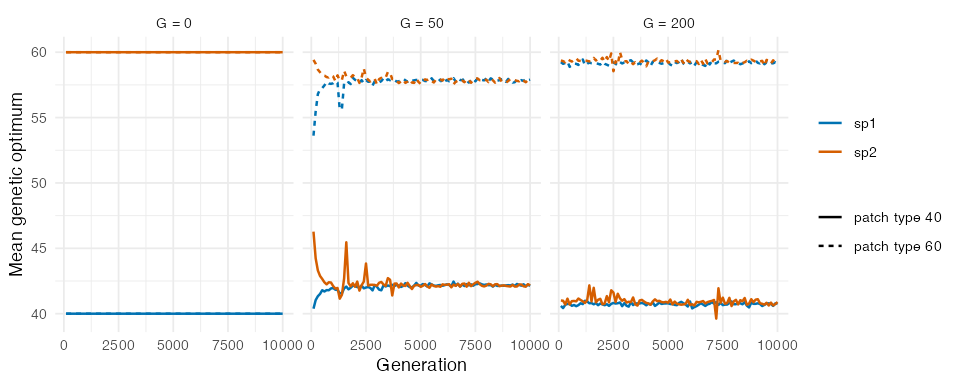
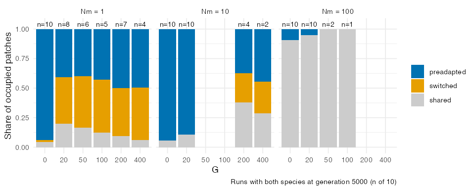
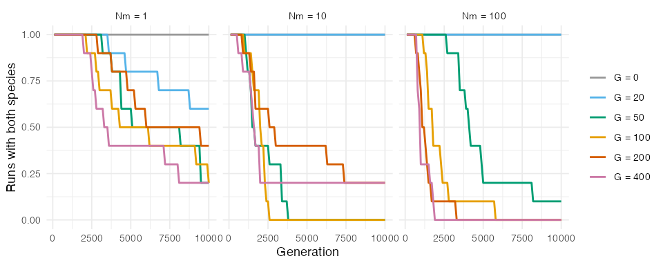
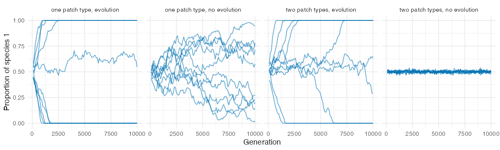
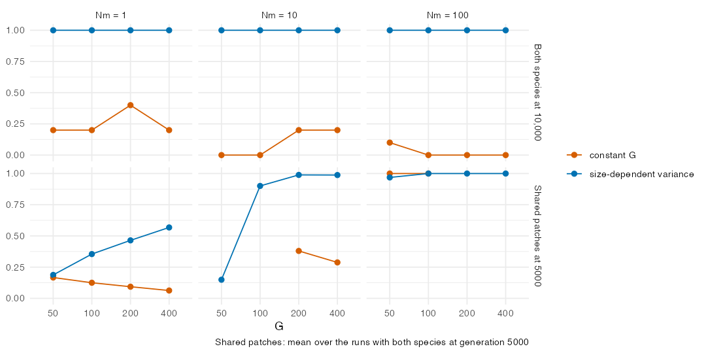
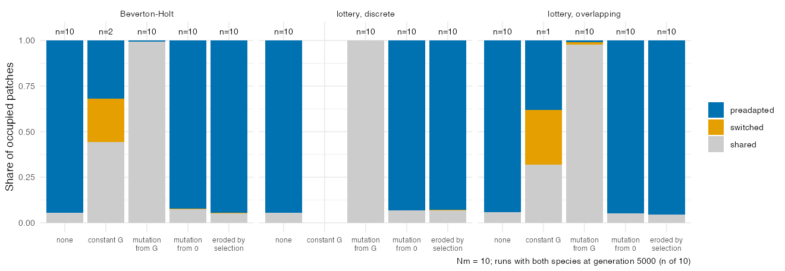

Replicating Leibold et al. (2019)
Source:vignettes/articles/replication-leibold.Rmd
replication-leibold.RmdLeibold et al. (2019) proposed that neutrality at the regional scale can emerge from local, niche-based adaptation. In their individual-based model, two species compete in a landscape of two patch types subject to patch extinction. Early colonists of empty patches can adapt to local conditions fast enough to keep out a species that was pre-adapted to them. Repeated over the landscape, these evolution-mediated priority effects make both species adapt to both patch types, so that patch type no longer predicts species composition, while each patch remains dominated by one species. We asked whether the quantitative-genetic engine of comdynamite reproduces these results, and where it departs from them. This article is part of the nesting map of the package, which lists the settings that approximate each published model and the mechanisms that are missing.
Translation of the model
The script data-raw/replication_leibold2019.R follows
the parameters of the main results in Table S2 of their SI Appendix,
with the environment and the traits multiplied by 100:
- a 10 x 10 grid of patches with two patch types (environment 40 or 60), placed at random, half each; a Gaussian niche of width 20 and a non-genetic phenotypic variance of 4;
- two species, each pre-adapted to one patch type, and every patch filled at the start with its pre-adapted species;
- Beverton-Holt growth with r_{max} = 5 and equal competition within and between species (\alpha = 0.01), so that a patch holds about 400 individuals, as their carrying capacity;
- one step per generation, with about N_m =
1, 10 or 100 dispersing offspring per patch and generation
(
dispersal = Nm / 400) and the exponential kernel of their model with \rho = 2; - patch extinction with probability 0.01 per generation, through the
argument
disturbanceofsimulate_metacommunity(), added for this replication; - evolution of the optimum by Lande’s equation with a constant additive genetic variance G, drift with N_e / N = 0.5 and founder sampling; G = 0 is the run without evolution;
- 10 replicates of 10,000 generations for each combination of G and N_m, and a control with a single patch type (50) and two identical species (their Fig. S2).
Their model has 10 diploid loci with mutation and no genetic variance at the start, sexual reproduction, overlapping generations and microsite variation within patches. None of these is translated. With a constant G, the speed of adaptation is a parameter rather than an outcome: a population moves a fraction G / (\sigma^2 + G + V_E) of its distance to the optimum each generation, which is 5%, 11%, 20%, 33% and 50% for G = 20, 50, 100, 200 and 400. We therefore treat G as an axis of the comparison. We did not try to match the speed of adaptation of their model, which depends on mutation and on the build-up of variance.
We recorded, every 100 generations, the proportion of each species in
the metacommunity, the mean genetic optimum of each species in each
patch type, and the difference in mean growth rate between the species
within each patch type, the counterpart of their fitness difference. As
in their variation partitioning, we regressed Hellinger-transformed
composition and the community mean optimum on patch type and on PCNM
spatial variables (vegan::varpart()), with the edge patches
left out. We report the adjusted R^2 of
patch type alone, since the pure fraction exceeds 1 when the adjusted
R^2 of space is negative. At generation
5000, patches were classified as dominated (90% or more of the
individuals) by their pre-adapted species, by the other species
(“switched”), or shared. The script
data-raw/figures_leibold2019.R makes the figures and the
numbers of this article.
Regional neutrality
Without evolution, the run stayed in species sorting. Each species had a growth rate about 2 units higher in its own patch type, patch type explained 96% of the variation in composition over generations 4000 to 5000 (N_m = 10), and 94% of the patches kept their pre-adapted species. With G = 20, adaptation was partial: the fitness difference fell to 1.36, and composition still followed patch type (R^2 = 0.94).
With faster adaptation, the results of Leibold et al. (2019) appeared. With G \geq 100 and N_m = 10, the fitness difference within patch types fell to about 0.01 in the first 200 generations, both species evolved optima close to each patch type, and patch type explained 11% or less of the variation in composition (3.5% with G = 400). The community mean optimum still followed patch type (R^2 between 0.92 and 0.95), so that traits, unlike species, remained sorted by environment, as in their Fig. 6C. In runs that kept both species, these values held until generation 10,000 (for example, R^2 of composition 0.025 and of the mean optimum 0.94 over generations 4000 to 5000 with G = 200).


Local dominance
Evolution-mediated priority effects depended on dispersal, as in their Fig. 5. Among runs with both species at generation 5000, the share of switched patches with evolution was 40 to 45% with N_m = 1, and only 6 to 20% of the patches were shared, so most patches were dominated by one species, half of them by the species that was not pre-adapted. Interestingly, at this low dispersal even G = 20, which left the species distinct at N_m = 10, gave 40% of switched patches. With N_m = 10, shared patches made up 29 to 38% with G of 200 and 400 (only 4 and 2 runs still had both species), and with N_m = 100 nearly all patches were shared, with and without evolution, so mass effects replaced local dominance. Local dominance was thus weaker than in their model, in which local co-occurrence was rare at N_m = 10. We test three explanations below.

Regional drift
The main departure from their results is the persistence of the two species. Without evolution, or with G = 20 at N_m of 10 and 100, both species persisted in all runs for 10,000 generations. Once regional neutrality emerged, one species was lost by drift in most runs: with N_m = 10, in all runs by generation 5000 with G of 50 and 100, and in 8 of 10 by generation 10,000 with G of 200 and 400, after a median of 1550 to 2150 generations. Drift was slowest at N_m = 1 and fastest at N_m = 100. Leibold et al. (2019) also found that regional neutrality increases drift in the proportions of the species, which grew with lower dispersal, higher extinction and smaller metacommunities (their Figs. 3C and S1), but in our runs drift seems to be faster, and it increased with dispersal rather than decreasing. We did not extract the proportions of their Fig. S1, so we cannot say by how much drift differs.

The control with a single patch type points to a second difference. With two identical species and no evolution, both persisted in all 10 runs; with G = 200, one was lost in 9 runs, after a median of 1300 generations, so evolution accelerated the loss of a species even where the species are equivalent (see the next section). In their Fig. S2, a single patch type gave drift through local neutrality both with and without evolution, and drift was stronger under local than under regional neutrality; without evolution, our identical species drifted too slowly to lose one in 10,000 generations.

Two explanations tested
We first suspected that both departures come from following
populations rather than individuals: comdynamite merges immigrants into
the mean of the resident population before selection, whereas an
individual-based model removes maladapted immigrants one by one. A
second possibility, suggested by the control with a single patch type,
is that drift of the population means and founder sampling move
populations away from their optimum, which creates fitness differences
between species that selection then amplifies. The script
data-raw/mechanism_leibold2019.R crossed both factors with
the same seeds as above (G of 50 to
400, N_m of 1, 10 and 100, 10
replicates). Immigrant selection was turned on with
evolution_control(immigrant_selection = TRUE), added for
this test, which lets the immigrants of each source arrive in proportion
to the fitness of their phenotype in the site they reach, so that the
immigrants that join a population are the survivors of this filter.
Drift of the means was turned off with ne_ratio = Inf, and
a last set of runs (G = 200, N_m = 10) also turned founder sampling off
(founder = FALSE).
data-raw/figures_mechanism_leibold2019.R makes the table
behind the numbers below.
Immigrant selection did not explain either departure. In runs that kept both species at generation 5000 (N_m = 10, drift on), 27 to 39% of the patches were shared with it, against 29 to 38% without it. With N_m = 10 it delayed the loss of a species modestly (median 2300 to 3250 generations, against 1550 to 2150), but with N_m of 1 and 100 the medians moved in both directions, by up to 850 generations. We therefore found no evidence that merging immigrants before selection causes the departures.
Drift explained most of the faster loss. Without drift of the means, the median time to the loss of a species rose from 1550 to 2150 generations to 3950 to 6250 generations with N_m = 10, and from 1000 to 4100 to 4400 to 8200 generations with N_m = 100. In the control with a single patch type and G = 200, both species persisted to generation 5000 in 8 of 10 runs without drift, against 1 of 10 with it. Without drift and without founder sampling, both species persisted to generation 10,000 in 9 of 10 runs of the control, as without evolution, and to generation 5000 in 9 of 10 runs with two patch types, although a species was still lost by generation 10,000 in 9 of these 10 runs (median 8500 generations). Thus, in our model, evolution speeds up regional drift mainly through drift and founder sampling of the population means, and the drift that remains under regional neutrality is the one that Leibold et al. (2019) described. A constant G seems to make this effect larger than in their model, since drift of the mean has a variance G / N_e per generation whatever the size of the population, whereas in an individual-based model a small population also holds less genetic variance.
Neither factor restored local dominance. Without drift and founder sampling, 62% of the patches were shared at generation 5000 with two patch types (G = 200, N_m = 10), more than with them.
Genetic variance that depends on population size
A third explanation for the weak local dominance was the constant
G itself: a few immigrants of the other
species found a population that adapts as fast as the resident, so the
resident keeps no evolutionary head start, whereas in an
individual-based model a population founded by a few individuals holds
little genetic variance and adapts slowly. To test it, we added
mutation_var to evolution_control(). Each
population then carries its own genetic variance, which loses a fraction
1 / (2 N_e) and gains the mutational
variance V_m each generation, so that
it approaches 2 N_e V_m (Lynch &
Hill 1986); founders keep the variance of their sources less 1 / (2k) for k founders, and gene flow averages the
variances of residents and immigrants. Selection does not act on the
variance, so the variance between the means of residents and immigrants
is not added; a first version that added it let gene flow between patch
types inflate the variance to more than twice its equilibrium. We set
V_m = G / 400, so that a full patch
(N_e = 200) has an equilibrium near
G, and reran the factorial design with
drift, with and without immigrant selection.
The genetic variance did depend on population size: at generation 10,000 (G = 200, N_m = 1), populations that made up less than 10% of their patch held a mean variance of 17, against 46 in the others. It did not restore local dominance, however; it removed it. With N_m = 10 and G \geq 100, 90 to 99% of the patches were shared at generation 5000, and even with N_m = 1 the share of shared patches grew with G, from 19 to 57%. At the same time, no species was lost in any of the 260 runs, including the control with a single patch type, whereas regional neutrality still emerged: without immigrant selection and with G \geq 100, the fitness difference within patch types was 0.05 or less, and patch type explained 17% or less of the variation in composition (2% or less with G \geq 200). Immigrant selection changed little, except with N_m = 100 and G = 100, where patch type still explained 56% of the variation in composition.

Taken together, these runs suggest that, in comdynamite, local dominance and the fast loss of species have the same source. With a constant G, drift of the population means has a variance of G / N_e per generation, which creates fitness differences between the species in a patch that selection then amplifies until one excludes the other; repeated over the landscape, the same fitness noise drives one species extinct. When the variance is held by the populations and shrinks in small ones, this noise is smaller, and two species adapted to the same patch type coexist locally as neutral competitors, refreshed by immigration. Local dominance in the model of Leibold et al. (2019) must therefore come from mechanisms that our model does not have. Lottery recruitment into vacated microsites, overlapping generations and the build-up of variance from new mutations are candidates, tested in the next section.
Three missing mechanisms
Their model has three features that the engine lacked: recruitment
into the microsites vacated by mortality, overlapping generations (“one
generation equals 10 iterations of mortality, reproduction, and
dispersal”), and loci that start without standing variation, so that the
genetic variance is built by mutation. We added
recruitment = "lottery", in which adults survive with
probability 1 - mortality, offspring are produced in
proportion to fitness and the vacant microsites (400 per patch, the
carrying capacity) are filled by a multivariate hypergeometric draw from
the offspring present after dispersal, and
variance_selection = TRUE in
evolution_control(), which removes each generation the
Bulmer (1971) reduction of the variance by stabilising selection, G^2/(\sigma^2 + G + V_E). We crossed three
recruitment settings (Beverton-Holt growth, a lottery with discrete
generations, and a lottery with mortality 0.1 per step, so 10 steps per
generation) with five genetic settings at N_m
= 10: no evolution, a constant G =
200, mutation and drift from G =
200 (V_m = 0.5), mutation and
drift from no variance, and the same with erosion by selection
(data-raw/mechanisms_leibold2019_recruitment.R; 10 runs of
10,000 generations each, patch extinction 0.01 per generation). Erosion
is taken as permanent, which holds for asexual reproduction; their
default is sexual, where recombination restores most of it, so this
setting is an upper bound on erosion.

None of the three mechanisms produced local dominance. The recruitment setting changed little within each genetic setting; the outcome was set by the genetic variance. With a constant G, one species was lost by generation 5000 in 8, 10 and 9 of the 10 runs (Beverton-Holt, discrete lottery, overlapping lottery), and in the three runs that kept both species 24–30% of the patches were held by the species not preadapted to them. With mutation and drift from G = 200, the mean variance fell to 49–91 by generation 10,000, both species persisted in all runs, fitness differences within patch types were 0.02 or less, and 98–100% of the patches were shared: regional neutrality without local dominance, as with the size-dependent variance above. Starting from no variance, the variance reached 73–138 by generation 10,000, but too slowly to adapt the species to the other patch type: patch type explained about 95% of the variation in composition at generations 4000–5000, the mean fitness difference within patch types fell only from 1.95 to 1.54–1.71, and 92–95% of the patches were held by the preadapted species, as without evolution. Erosion by selection kept the variance near 12 and gave the same result.
Taken together, lottery recruitment and overlapping generations seem not to be the source of the local dominance of Leibold et al. (2019), and building the variance from new mutations moves the outcome towards species sorting rather than towards local dominance, at least with V_m = 0.5. In comdynamite, switched patches appear only with a constant G, together with a fast loss of species. The rate of mutation was not matched to their loci, so a higher V_m could reach the variance needed for adaptation within the 5000 generations; we did not explore it.
Summary
The quantitative-genetic engine reproduces the qualitative result of Leibold et al. (2019): when local adaptation is fast relative to competitive displacement, both species adapt to both patch types, fitness differences vanish within patch types, and patch type stops predicting composition while it still predicts traits. It departs from their model in two ways: local dominance is weaker at intermediate and high dispersal, and regional drift removes one species faster, more so with higher dispersal and with evolution. Filtering maladapted immigrants before they join a population changed neither. Drift and founder sampling of the population means explained most of the faster loss of species. With a genetic variance that depends on population size, regional neutrality emerged without any loss of species, but local dominance disappeared at intermediate and high dispersal, so the local dominance of our runs with a constant G seems to be a product of drift of the means, and the local dominance of their model remains unexplained by our engine. Lottery recruitment into vacated microsites, overlapping generations and a variance built from new mutations, with or without erosion by selection, did not produce it either. These are 10 replicates per setting, and the speed of adaptation was set through G rather than matched to their model.
References
Bulmer, M. G. (1971). The effect of selection on genetic variability. The American Naturalist, 105, 201–211. https://doi.org/10.1086/282718
Lynch, M., & Hill, W. G. (1986). Phenotypic evolution by neutral mutation. Evolution, 40, 915–935. https://doi.org/10.1111/j.1558-5646.1986.tb00561.x
Leibold, M. A., Urban, M. C., De Meester, L., Klausmeier, C. A., & Vanoverbeke, J. (2019). Regional neutrality evolves through local adaptive niche evolution. Proceedings of the National Academy of Sciences, 116, 2612–2617. https://doi.org/10.1073/pnas.1808615116